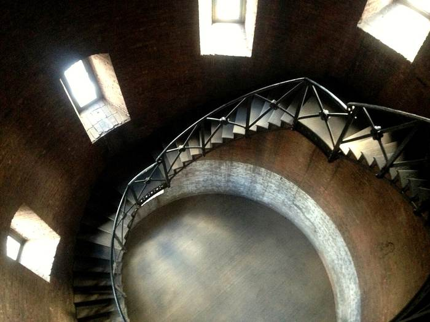

Official websites use
A website belongs to an official organization in the United States.
Secure websites use HTTPS
A lock () or https:// means you've safely connected to the website. Share sensitive information only on official, secure websites.

Discover compelling stories and historical insights by exploring previous blog posts.
Learn MoreExplore this historical timeline, created to celebrate the 150th anniversary of the creation of the Department of Justice, spanning from its beginnings in 1789 to today.
Go to the TimelineEighty-seven distinguished Americans have served as Attorney General. Learn more about these honored individuals with this publication.
Learn About Our Attorneys General
Thirty-nine distinguished Americans have served as Deputy Attorney General. Learn more about these honored individuals.
Learn About Our Deputy Attorneys General
This book has been created to give a glimpse inside the halls of the Robert F. Kennedy Building, and to show how its art relates to the efforts put forth by the Department and its people.
Learn More About the Building
Read about the history of the Department of Justice's seal and the somewhat enigmatic Latin motto appearing on it: "Qui Pro Domina Justitia Sequitur."
Learn About the Seal
U.S. Department of
JUSTICE